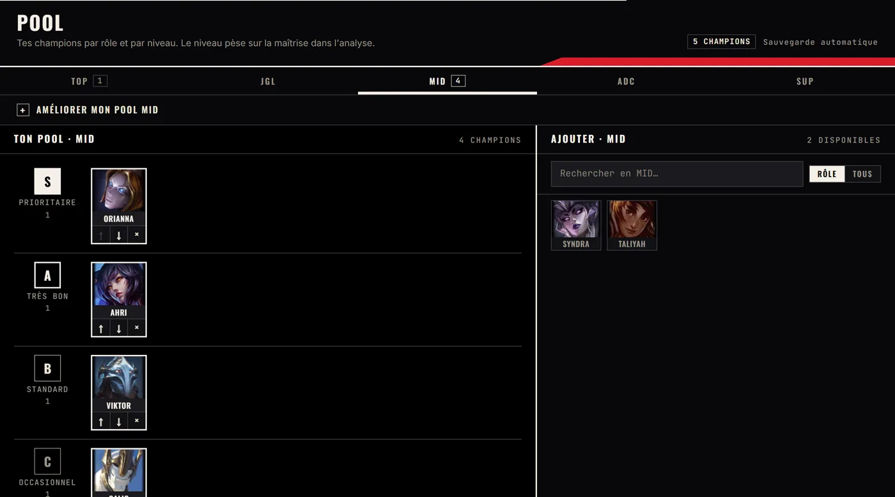
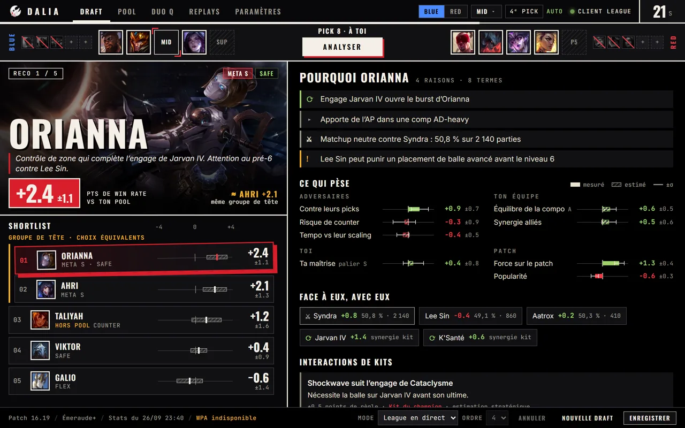
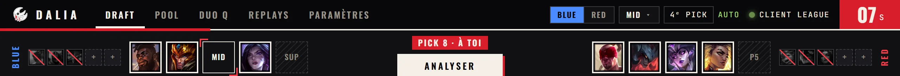
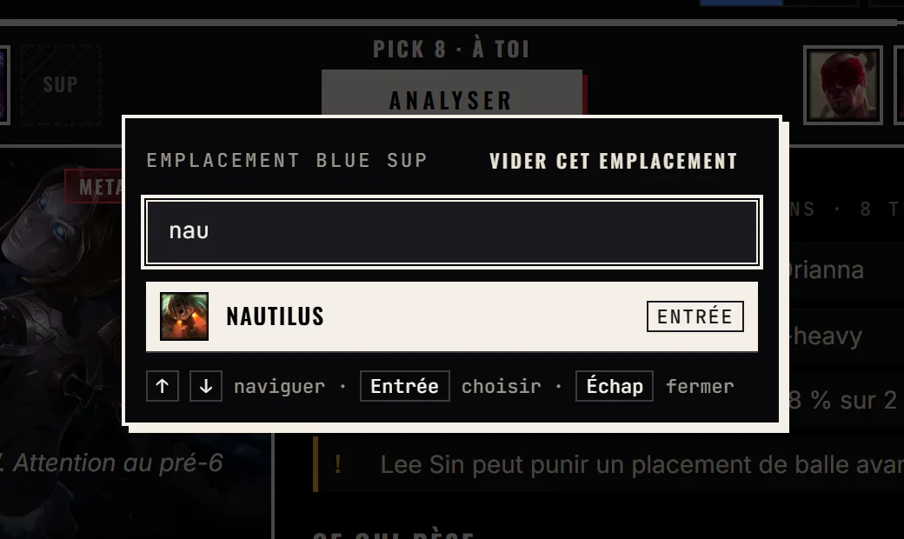
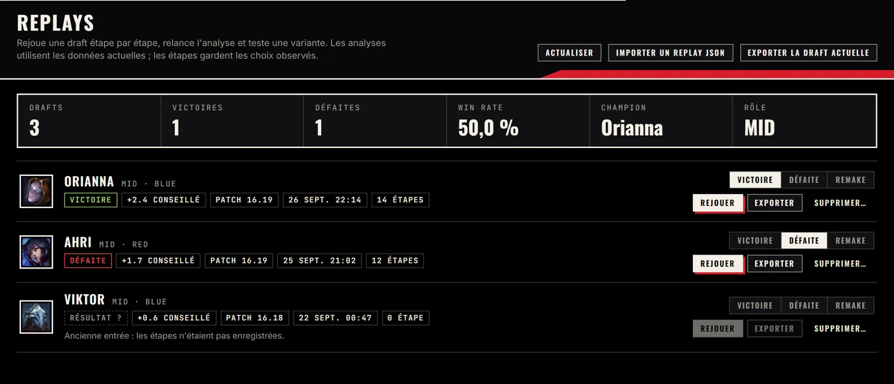
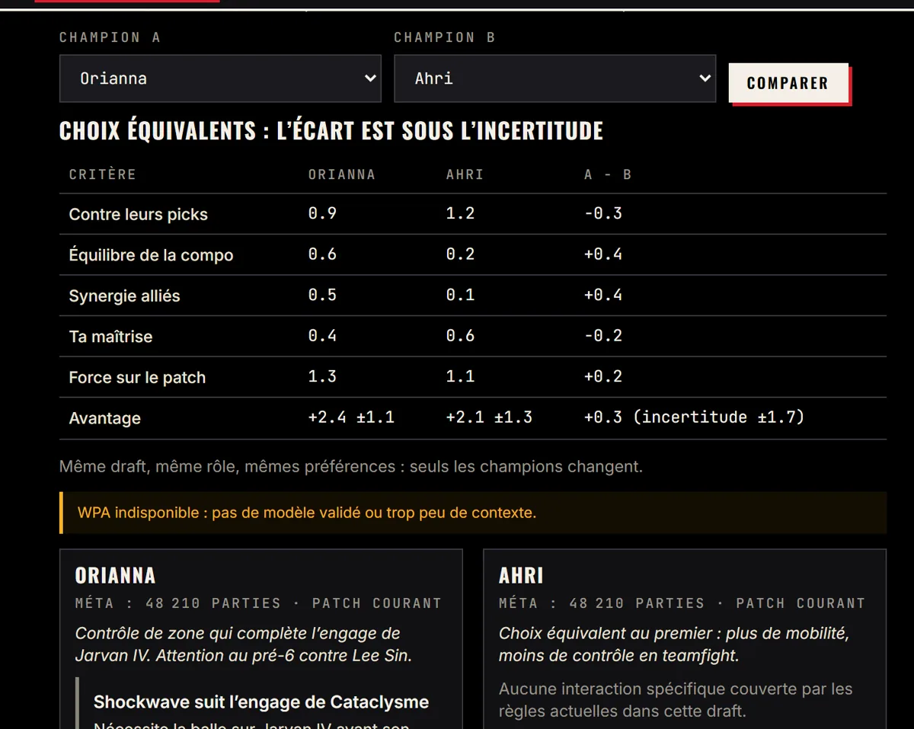

Ton pool, niveau par niveau
Range tes champions de S à D pour chaque rôle. DALIA en tient compte, et repère les réponses qui manquent à ton pool.
Assistant de draft · League of Legends
DALIA lit ta sélection de champions en direct et classe tes picks, avec ses raisons et sa marge d’erreur.

DALIA repère le client League : ton équipe, ton rôle, ton ordre de pick.
Pick, ban ou survol d’un allié : l’analyse repart toute seule. Rien à cliquer.
Le pick conseillé, son avantage et ses raisons sont déjà à l’écran.

Bans, picks et tour en cours, synchronisés avec le client. Un clic sur un emplacement pour corriger à la main.
Son avantage en points de win rate face à ton pool, et l’incertitude juste à côté.
Chaque pick avec sa bande d’incertitude. Quand deux bandes se recouvrent, DALIA les annonce équivalents.
Les raisons du moteur en clair : synergies, matchups, points d’attention.
Chaque critère, pour ou contre toi. Plein s’il est mesuré sur des parties, hachuré s’il est estimé.

Range tes champions de S à D pour chaque rôle. DALIA en tient compte, et repère les réponses qui manquent à ton pool.

Tape « nau », Entrée. Le champion est placé.
Lie ton compte à celui de ton duo : son rôle et son pool entrent dans l’analyse.

Rejoue une draft étape par étape, relance l’analyse, teste une variante. Tes résultats nourrissent tes statistiques.

Même draft, mêmes préférences, critère par critère. DALIA dit si l’écart compte vraiment.
Ton rang choisit les statistiques utilisées. Tu règles le poids de chaque critère, et l’analyse se met à jour toute seule.
Un installeur Windows de quelques mégaoctets, publié sur GitHub.
Si Windows SmartScreen prévient, choisis « Informations complémentaires », puis « Exécuter quand même ».
Crée ton compte : il garde ton pool, tes replays et la liaison duo.
Lance League. Dès la sélection des champions, DALIA remplit la draft et l’analyse.
Non. DALIA lit uniquement l’API locale du client League, celle qu’utilisent les outils de draft. Rien n’est injecté dans le jeu, aucune mémoire n’est lue, rien ne s’affiche par-dessus la partie.
Environ 2,4 points de win rate de plus que la moyenne de ton pool dans cette draft. Le chiffre après ± est l’incertitude : il grandit quand les données manquent. Ce n’est pas une probabilité de victoire.
Des statistiques de parties par patch et par rang, du catalogue officiel des champions, de tes parties via l’API Riot, et de règles de kits pour les interactions que les statistiques ne voient pas.
Oui, gratuit. Il garde ton pool, tes replays, tes réglages et la liaison avec ton duo.
Pas pour l’instant : la lecture du client League repose sur Windows.
Oui, sous licence MIT. Client, serveur et moteur sont sur GitHub ; les issues et les suggestions sont bienvenues.
DALIA est un projet personnel, construit avec Tauri et React côté bureau, FastAPI et PostgreSQL côté serveur.
Voir le code